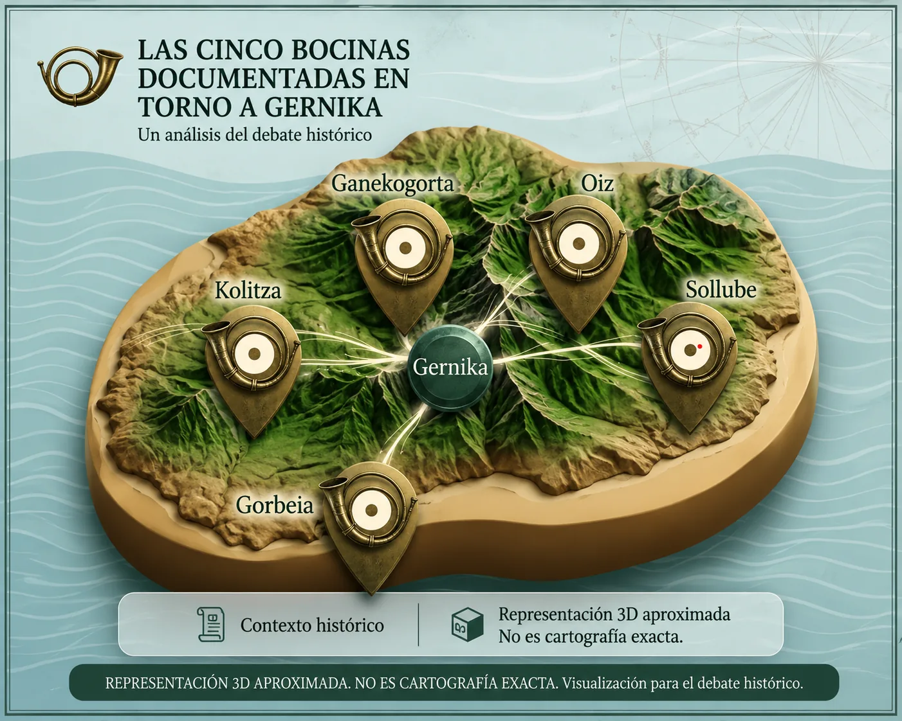

El texto transmitido del Capitulado habla de Junta General y de cinco vozinas.
El misterio en 30 segundos
Montes Bocineros de Bizkaia: las cinco bocinas de Gernika
Durante siglos, Bizkaia imaginó sus montes como puntos de llamada. Los documentos confirman bocinas y vozineros; lo que aparece mucho más tarde es la lista concreta de cinco cumbres.

Ruta clara para todos
Lee la web en este orden
Primero entiende la historia, después mira los montes, luego sitúalos en el mapa y termina con la conclusión. Las fuentes quedan disponibles para quien quiera comprobarlo.
El Fuero Viejo conservado en copia de 1600 menciona vozineros y sayones.
Trueba enumera Gorbea, Oiz, Sollube, Ganecogorta y Colisa con cautela: “se cree fuesen…”.
Cinco bocinas documentadas no equivalen automáticamente a cinco montes medievales.
Para montañerosLos cinco montes tradicionalesGorbeia, Oiz, Sollube, Kolitza y Ganekogorta. Lectura rápidaMapa, fichas, distancias aproximadas y plausibilidad acústica/visual. Cautela documentalEl mapa ayuda a entender Bizkaia; no prueba una lista medieval cerrada.
Montes, mapa y lectura rápida
¿Vienes por ubicar las cumbres? Empieza por la página de montes: fichas ligeras, altitudes, zonas, relación con Gernika y enlaces al mapa, sin prometer rutas no verificadas.
Ver los cinco montesAbrir mapa territorialEntender la historia
La pregunta que sostiene toda la web
¿Cuándo se unieron dos cosas distintas: las cinco bocinas documentadas y la lista moderna de cinco cumbres? La investigación separa lo probado, lo plausible, lo posterior y lo pendiente.
Paso 1
EmpezarLee la historia
Una explicación guiada, sin aparato técnico al principio.
Paso 2
FuentesComprueba las fuentes
PDFs y recortes clave para leer los documentos directamente.
Paso 3
Leer conclusiónVeredicto
Qué se puede afirmar hoy sin convertir tradición en prueba medieval.
Cronología mínima
1342
Cinco vozinas. Base documental transmitida en contexto de Junta General.
1452/1600
Vozineros y sayones. El Fuero Viejo conserva la figura institucional.
1785
Iturriza. Refuerza el marco de bocinas, merinos y merindades, pero no se ha localizado ahí la lista de cinco montes.
1872
Trueba. Primera lista localizada de los cinco montes tradicionales, formulada con cautela.
1873
El Correo Vascongado. Facsímil incorporado: lista ampliada de nueve montañas/rocas vinculada a romances de Trueba.
Archivo documental separado: informes IA, auditorías, comparativas y metodología siguen disponibles, pero ya no compiten con la lectura principal. La web primero explica; después documenta.
Para profundizar
La ruta principal termina aquí, pero puedes comprobar documentos, personajes y vocabulario cuando quieras.